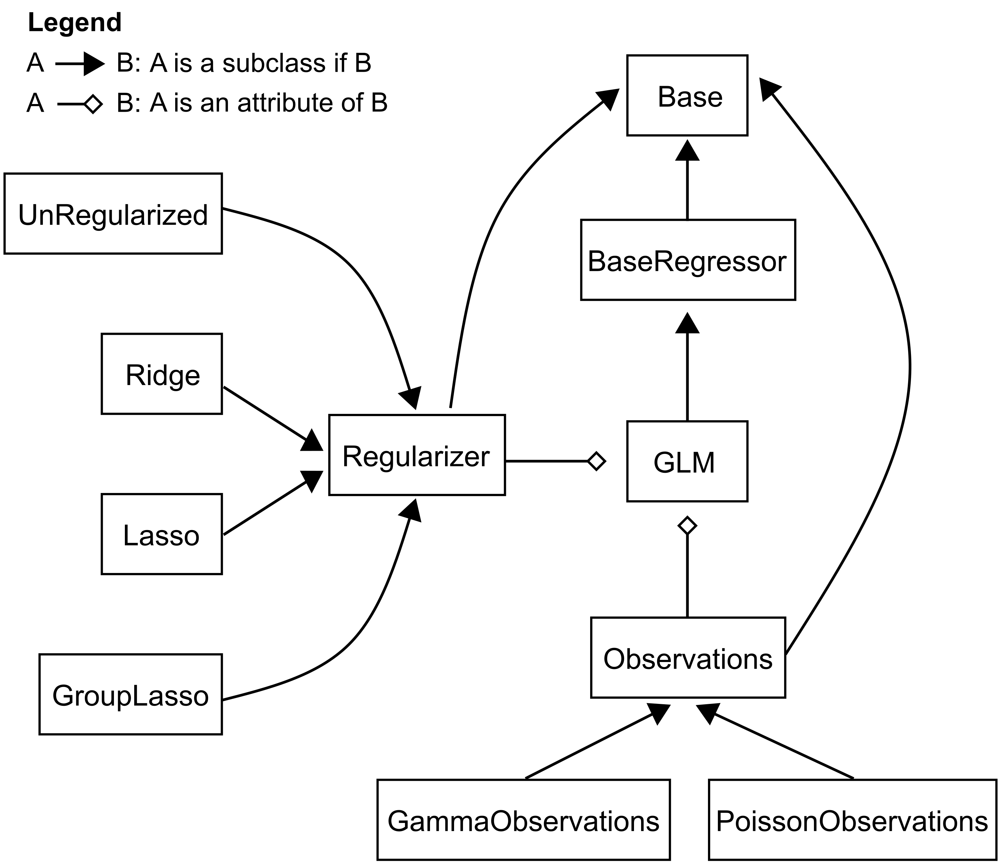

The glm Module#
Introduction#
Generalized Linear Models (GLM) provide a flexible framework for modeling a variety of data types while establishing a relationship between multiple predictors and a response variable. A GLM extends the traditional linear regression by allowing for response variables that have error distribution models other than a normal distribution, such as binomial or Poisson distributions.
The nemos.glm module currently offers implementations of two GLM classes:
GLM: A direct implementation of a feedforward GLM.PopulationGLM: An implementation of a GLM for fitting a populaiton of neuron in a vectorized manner. This class inherits fromGLMand redefines thefitand_predictto fit the model and predict the firing rate.
Our design aligns with the scikit-learn API, facilitating seamless integration of our GLM classes with the well-established scikit-learn pipeline and its cross-validation tools.
The classes provided here are modular by design offering a standard foundation for any GLM variant.
Instantiating a specific GLM simply requires providing an observation model (Gamma, Poisson, etc.), a regularization strategies (Ridge, Lasso, etc.) and an optimization scheme during initialization. This is done using the nemos.observation_models.Observations, nemos.regularizer.Regularizer objects as well as the compatible solvers, respectively.

The Concrete Class GLM#
The GLM class provides a direct implementation of the GLM model and is designed with scikit-learn compatibility in mind.
Inheritance#
GLM inherits from BaseRegressor. This inheritance mandates the direct implementation of methods like predict, fit, score, update, and simulate.
Parameter validation is delegated to the GLMValidator class, which handles conversion between user-provided parameters (tuples of coefficient and intercept arrays) and the internal GLMParams representation.
Attributes#
observation_model: Property that represents the GLM observation model, which is an object of thenemos.observation_models.Observationstype. This model determines the log-likelihood and the emission probability mechanism for theGLM.coef_: Stores the solution for spike basis coefficients asjax.ndarrayafter the fitting process. It is initialized asNoneduring class instantiation.intercept_: Stores the bias terms’ solutions asjax.ndarrayafter the fitting process. It is initialized asNoneduring class instantiation.dof_resid_: The degrees of freedom of the model’s residual. this quantity is used to estimate the scale parameter, see below, and compute frequentist confidence intervals.scale_: The scale parameter of the observation distribution, which together with the rate, uniquely specifies a distribution of the exponential family. Example: a 1D Gaussian is specified by the mean which is the rate, and the standard deviation, which is the scale.solver_state_: Indicates the solver’s state. For specific solver states, refer to the solver implementations innemos.solvers.
Additionally, the GLM class inherits the attributes of BaseRegressor, see the relative note for more information.
Public Methods#
predict: Validates input and computes the mean rates of theGLMby invoking the inverse-link function of theobservation_modelsattribute.score: Validates input and assesses the Poisson GLM using either log-likelihood or pseudo-\(R^2\). This method uses theobservation_modelsto determine log-likelihood or pseudo-\(R^2\).fit: Validates input and aligns the Poisson GLM with spike train data. It leverages theobservation_modelsandregularizerto define the model’s loss function and instantiate the regularizer.simulate: Simulates spike trains using the GLM as a feedforward network, invoking theobservation_models.sample_generatormethod for emission probability.compute_loss: Computes the loss function for given user-provided parameters,X, andy. This method validates inputs and parameters, converts user parameters to the internal representation, and delegates to_compute_loss.initialize_params: Initialize model parameters, setting to zero the coefficients, and setting the intercept by matching the firing rate.initialize_optimizer_and_state: Initialize the solver and its state. Takes initial parameters and returns the solver state.update: Run a step of optimization and update the parameter and solver step.
Private Methods#
Here we list the private methods related to model computations:
_predict: Forecasts rates based on current model parameters and the inverse-link function of theobservation_models._compute_loss: Predicts the rate and calculates the negative log-likelihood based on the observation model, excluding normalization constants. Operates onGLMParamsinternally._get_model_params: Packscoef_andintercept_attributes into aGLMParamscontainer._set_model_params: Unpacks aGLMParamscontainer and stores coefficients incoef_andintercept_attributes.
Parameter and input validation is handled by the GLMValidator, while solver-regularizer configuration methods are inherited from BaseRegressor.
Internal Parameter Representation#
The GLM class uses GLMParams, an equinox.Module container, to represent parameters internally:
class GLMParams(eqx.Module):
coef: jnp.ndarray | dict
intercept: jnp.ndarray
@staticmethod
def regularizable_subtrees():
return [lambda p: p.coef]
This internal representation:
Provides clear, self-documenting field names (
coef,intercept)Specifies which parameters are regularizable via the
regularizable_subtrees()methodIs transparent to users—they continue to provide parameters as
(coef, intercept)tuples
The GLMValidator handles conversion between user-facing tuples and internal GLMParams automatically.
The Concrete Class PopulationGLM#
The PopulationGLM class is an extension of the GLM, designed to fit multiple neurons jointly. This involves vectorized fitting processes that efficiently handle multiple neurons simultaneously, leveraging the inherent parallelism.
PopulationGLM Specific Attributes#
feature_mask: A mask that determines which features are used as predictors for each neuron. It can be a matrix of shape(num_features, num_neurons)or aPyTreeof binary values, where 1 indicates that a feature is used for a particular neuron and 0 indicates it is not.
Overridden Methods#
fit: Overridden to handle fitting of the model to a neural population. This method validates input including the mask and fits the model parameters (coefficients and intercepts) to the data._predict: Computes the predicted firing rates using the model parameters and the feature mask.
Contributor Guidelines#
Implementing a BaseRegressor Subclasses#
When crafting a functional (i.e., concrete) GLM class:
You must inherit from
GLMor one of its derivatives.If you inherit directly from
BaseRegressor, you must implement all the abstract methods, see theBaseRegressorpage for more details.If you inherit
GLMor any of the other concrete classes directly, there won’t be any abstract methods.You may embed additional parameter and input checks if required by the specific GLM subclass.
You may override some of the computations if needed by the model specifications.